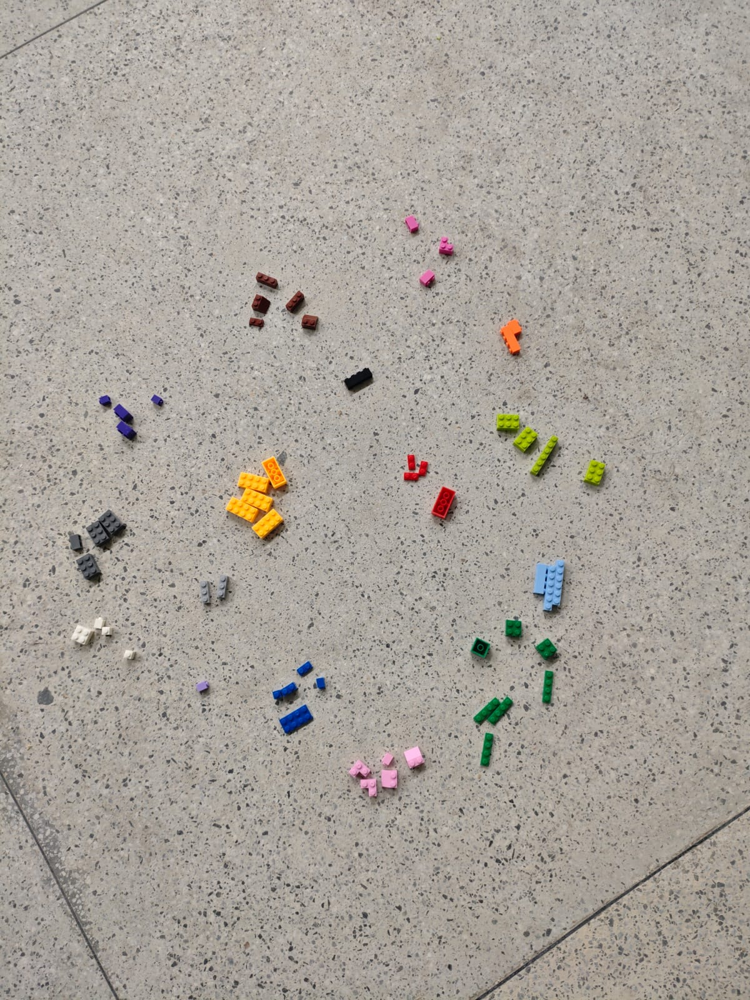
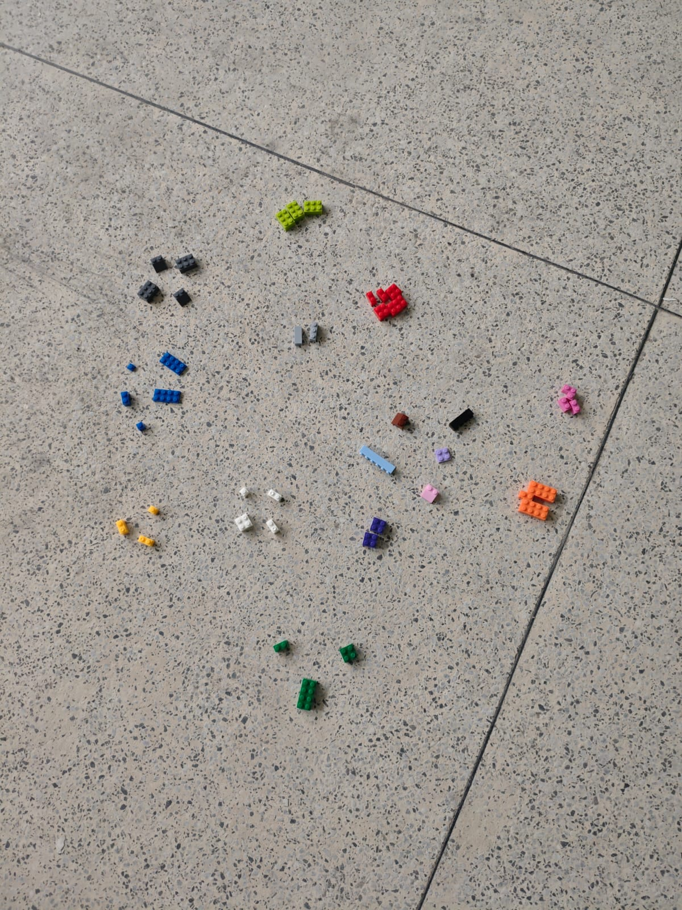
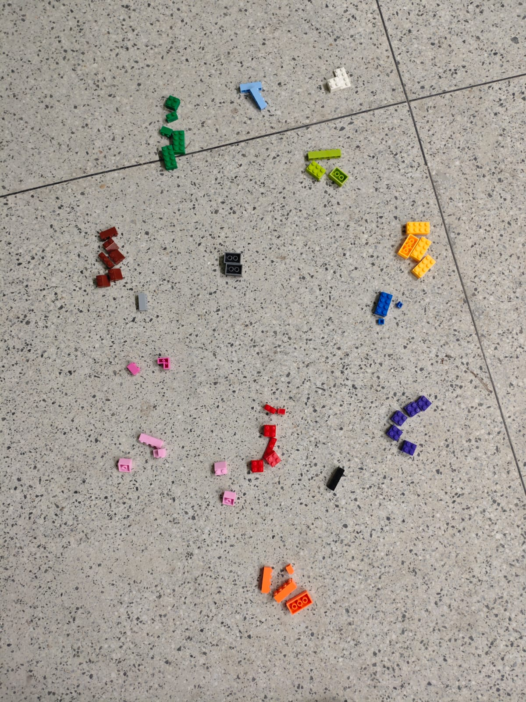
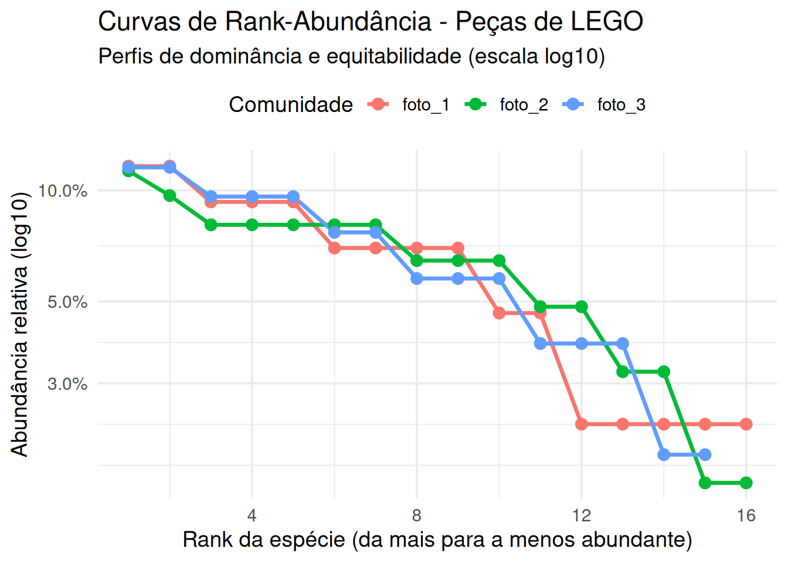
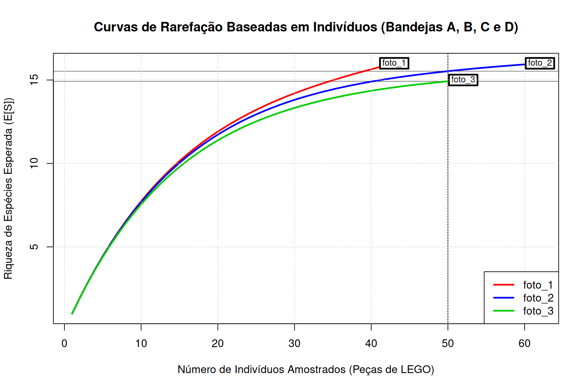

# ---------------------------------------------------------------------
# 1. INSTALAÇÃO E CARREGAMENTO DOS PACOTES
# ---------------------------------------------------------------------
# Pacotes que vamos usar:
# tidyverse -> manipulação de dados (dplyr, tidyr, readr) e gráficos (ggplot2)
# vegan -> análises de ecologia de comunidades
pacotes <- c("tidyverse", "vegan")
# Instala apenas os pacotes que ainda NÃO estão instalados
for (p in pacotes) {
if (!requireNamespace(p, quietly = TRUE)) {
install.packages(p)
}
}
# Carrega os pacotes (precisa fazer isso toda vez que abrir o R)
library(tidyverse)
library(vegan)Módulo 1: Descrição de Comunidades Biológicas — Protocolo LEGO & Análises no R
Ecologia de Comunidades: Riqueza, Abundância Relativa, Rank-Abundância e Rarefação
1 Introdução
Neste primeiro módulo prático, utilizaremos blocos de LEGO como um modelo análogo e tátil de uma comunidade biológica. Cada comunidade é representada por um Bandeja opaco contendo 100 peças de LEGO.
1.0.1 Regra de Definição de Espécie (Módulo 1)
- Espécie = Cor da Peça. (Exemplo: Peça Vermelha = Espécie A, Peça Amarela = Espécie B, Peça Azul = Espécie C, etc.).
- Indivíduo = Cada peça física de LEGO.
- Forma e tamanho: Serão ignorados neste módulo (serão utilizados como traços funcionais no Módulo 3).
2 Protocolo
2.0.1 Materiais por Grupo (4 Alunos)
- 1 Bandeja contendo 100+ peças de LEGO com uma estrutura de comunidade pré-configurada.
- Ficha de Campo (Planilha de Amostragem Sequencial Indivíduo a Indivíduo).
2.0.2 Passo a Passo do Sorteio Peça a Peça (Individual-based Sampling)
- Amostragem Sequencial: O sorteio peça a peça simula a caminhada no campo e o encontro sucessivo com indivíduos biológicos em um inventário.
- Construção da Curva Amostral do Grupo: Ao registrar a sequência exata de aparecimento de novas cores (novas espécies), o grupo constrói manualmente a sua Curva de Acúmulo de Espécies por Indivíduo.
3 Exercício em R para a aula 1
Essas são as fotos das nossas 3 “comunidades”. Colequei elas numa I.A. par acontar e a danada me devolveu uma tabela com os dados certinhos (acho)



Feito isso, fiz uma tabela que todos vocês devem baixar AQUI
Quando o arquivo abrir no seu navegador, clique na tela com a o botão direito do mouse e vá em “salvar como”e salve o arquivo na sua pasta com a extensão .csv
3.1 Pacotes necessários
3.2 1. Carregando os dados
dados <- read_csv("~/eco_com/exercises/ex1/contagem_pecas_lego.csv") # Note que os dados devem estar salvos na mesma pasta que este arquivo ou você precisa usar o caminho específico
# Olhe os dados: sempre confira se foram lidos corretamente
print(dados)# A tibble: 16 × 4
cor foto_1 foto_2 foto_3
<chr> <dbl> <dbl> <dbl>
1 verde_limao 3 4 3
2 verde_escuro 3 7 5
3 azul 5 4 3
4 azul_claro 1 3 2
5 roxo_escuro 2 4 5
6 lilas 1 1 0
7 rosa_magenta 4 3 2
8 rosa_claro 1 5 5
9 vermelho 5 5 6
10 laranja 3 2 4
11 amarelo 3 6 4
12 marrom 1 5 6
13 branco 4 5 3
14 cinza_claro 2 2 1
15 cinza_escuro 4 5 2
16 preto 1 1 1glimpse(dados)Rows: 16
Columns: 4
$ cor <chr> "verde_limao", "verde_escuro", "azul", "azul_claro", "roxo_escu…
$ foto_1 <dbl> 3, 3, 5, 1, 2, 1, 4, 1, 5, 3, 3, 1, 4, 2, 4, 1
$ foto_2 <dbl> 4, 7, 4, 3, 4, 1, 3, 5, 5, 2, 6, 5, 5, 2, 5, 1
$ foto_3 <dbl> 3, 5, 3, 2, 5, 0, 2, 5, 6, 4, 4, 6, 3, 1, 2, 13.3 3. PREPARAÇÃO DOS DADOS COM TIDYVERSE
# ---------------------------------------------------------------------
# Os pacotes de ecologia (vegan) esperam uma matriz de comunidade:
# LINHAS = comunidades (aqui, as fotos)
# COLUNAS = espécies (aqui, as cores)
# Nosso CSV está no formato inverso, então precisamos "girar" a tabela.
dados_longo <- dados %>%
pivot_longer(
cols = -cor, # todas as colunas, menos "cor"
names_to = "comunidade", # nomes das colunas viram a variável "comunidade"
values_to = "abundancia" # os números viram a variável "abundancia"
)
print(dados_longo)# A tibble: 48 × 3
cor comunidade abundancia
<chr> <chr> <dbl>
1 verde_limao foto_1 3
2 verde_limao foto_2 4
3 verde_limao foto_3 3
4 verde_escuro foto_1 3
5 verde_escuro foto_2 7
6 verde_escuro foto_3 5
7 azul foto_1 5
8 azul foto_2 4
9 azul foto_3 3
10 azul_claro foto_1 1
# ℹ 38 more rows3.4 Passo 3.2: formato “largo” com as cores como colunas (matriz de comunidade)
matriz_lego <- dados_longo %>%
pivot_wider(
names_from = cor, # cada cor vira uma coluna
values_from = abundancia
)
print(matriz_lego)# A tibble: 3 × 17
comunidade verde_limao verde_escuro azul azul_claro roxo_escuro lilas
<chr> <dbl> <dbl> <dbl> <dbl> <dbl> <dbl>
1 foto_1 3 3 5 1 2 1
2 foto_2 4 7 4 3 4 1
3 foto_3 3 5 3 2 5 0
# ℹ 10 more variables: rosa_magenta <dbl>, rosa_claro <dbl>, vermelho <dbl>,
# laranja <dbl>, amarelo <dbl>, marrom <dbl>, branco <dbl>,
# cinza_claro <dbl>, cinza_escuro <dbl>, preto <dbl>3.5 Passo 3.3: transformar em matriz numérica, com o nome da foto nas linhas
mat_num <- matriz_lego %>%
column_to_rownames("comunidade") # a coluna "comunidade" vira o nome das linhas
print(mat_num) verde_limao verde_escuro azul azul_claro roxo_escuro lilas rosa_magenta
foto_1 3 3 5 1 2 1 4
foto_2 4 7 4 3 4 1 3
foto_3 3 5 3 2 5 0 2
rosa_claro vermelho laranja amarelo marrom branco cinza_claro
foto_1 1 5 3 3 1 4 2
foto_2 5 5 2 6 5 5 2
foto_3 5 6 4 4 6 3 1
cinza_escuro preto
foto_1 4 1
foto_2 5 1
foto_3 2 13.6 4. RIQUEZA OBSERVADA (S) E ABUNDÂNCIA TOTAL (N)
# S = número de espécies (cores) presentes em cada comunidade
# N = número total de indivíduos (peças) em cada comunidade
resumo <- data.frame(
Comunidade = rownames(mat_num),
N_Individuos = rowSums(mat_num), # soma das peças da linha
Riqueza_S = specnumber(mat_num) # conta quantas cores têm abundância > 0
)
print(resumo) Comunidade N_Individuos Riqueza_S
foto_1 foto_1 43 16
foto_2 foto_2 62 16
foto_3 foto_3 52 153.7 5. CURVAS DE RANK-ABUNDÂNCIA (GRÁFICO DE WHITTAKER)
# Ordena as espécies da mais para a menos abundante (Rank 1, 2, 3...)
# e mostra a abundância relativa em escala logarítmica.
rad_df <- dados_longo %>%
filter(abundancia > 0) %>% # remove cores ausentes
group_by(comunidade) %>% # trabalha em cada foto separadamente
arrange(desc(abundancia), .by_group = TRUE) %>% # ordena da maior para a menor
mutate(
rank = row_number(), # posição (1 = mais abundante)
abundancia_relativa = abundancia / sum(abundancia)
) %>%
ungroup()
grafico_rad <- ggplot(rad_df, aes(x = rank, y = abundancia_relativa,
color = comunidade, group = comunidade)) +
geom_line(linewidth = 1.2) +
geom_point(size = 3) +
scale_y_log10(labels = scales::percent_format(accuracy = 0.1)) +
labs(
title = "Curvas de Rank-Abundância - Peças de LEGO",
subtitle = "Perfis de dominância e equitabilidade (escala log10)",
x = "Rank da espécie (da mais para a menos abundante)",
y = "Abundância relativa (log10)",
color = "Comunidade"
) +
theme_minimal(base_size = 14) +
theme(legend.position = "top")
print(grafico_rad)
3.8 8. Curvas de Rarefação Baseadas em Indivíduos (Individual-based Rarefaction)
A rarefação baseada em indivíduos padroniza o esforço amostral, permitindo responder: “Qual seria a riqueza de espécies esperada se tivéssemos amostrado exatamente \(N\) indivíduos em cada Bandeja?”
3.8.1 A) Cálculo e Gráfico de Rarefação (rarecurve)
# Cores para o gráfico
cores <- c("red", "blue", "green3", "purple")
# Curvas de Rarefação para os 4 Bandejas
rarecurve(mat_num, step = 1, sample = 50, col = cores, lwd = 2.5,
xlab = "Número de Indivíduos Amostrados (Peças de LEGO)",
ylab = "Riqueza de Espécies Esperada (E[S])",
main = "Curvas de Rarefação Baseadas em Indivíduos (Bandejas A, B, C e D)")
grid()
legend("bottomright", legend = rownames(mat_num), col = cores, lty = 1, lwd = 2.5)
3.8.2 B) Riqueza Rarefeita Padronizada (\(N = 50\) e \(N = 20\) indivíduos)
# Padronizando para N = 50 e N = 20 peças
S_rare_50 <- rarefy(mat_num, sample = 50)
S_rare_20 <- rarefy(mat_num, sample = 20)
comparativo_rarefacao <- data.frame(
Comunidade = rownames(mat_num),
S_Observado_100 = specnumber(mat_num),
S_Rarefeito_50 = round(S_rare_50, 2),
S_Rarefeito_20 = round(S_rare_20, 2)
)
print(comparativo_rarefacao) Comunidade S_Observado_100 S_Rarefeito_50 S_Rarefeito_20
foto_1 foto_1 16 16.00 11.91
foto_2 foto_2 16 15.53 11.73
foto_3 foto_3 15 14.92 11.394 QUESTÕES DE INTERPRETAÇÃO ECOLÓGICA E ESTATÍSTICA
Responda às seguintes perguntas com base nos resultados obtidos no R e na experiência do sorteio em sala:
Efeito da Equitabilidade na Curva de Rank-Abundância: Compare o formato das curvas de rank-abndância e interprete: Qual a comunidade com mais espécies raras? Qual a comunidade com mais dominância?
Entropia: Em qual das comundades deve ser mais difícil sortear dois indivíduos da mesma espécie? Porque?